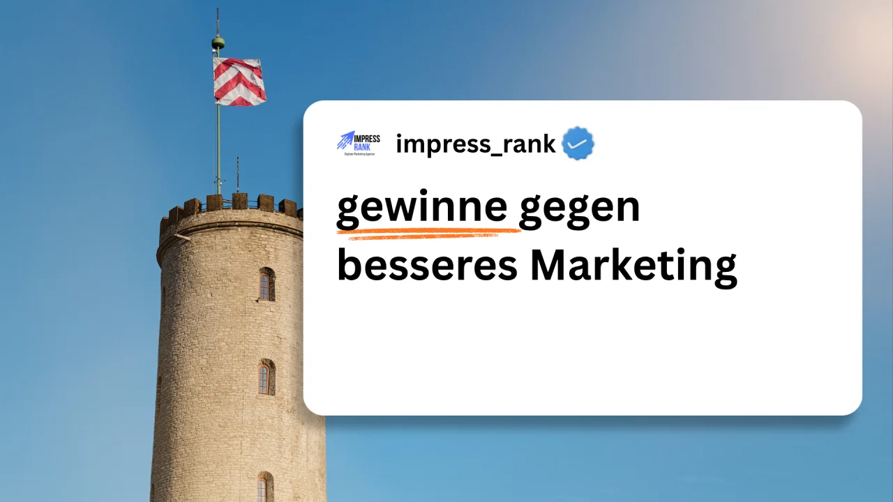

Hi, John here.
Recently I talked with a colleague about why some local businesses always seem to win, even though their marketing often isn't particularly good.
And honestly, the answer is pretty simple.
Most try to win with the “perfect offer”. With fancy ads. With creative slogans. With some marketing tricks or other.
But the businesses that really dominate locally?
They are simply present everywhere.
All the time.
When someone in your town needs a roofer … or a dentist … or a real estate agent …
most people immediately think of one name.
Not because their advertising is brilliant.
But because you see them all the time.
On Google. On Instagram. On Facebook. On YouTube.
Again and again.
And that is exactly the point:
Visibility beats better marketing.
Because in the end, people usually don't buy from the “best” provider.
They buy from the provider they think of first.
Most local businesses don't lose because they do bad work.
They lose because nobody thinks of them when the customer is ready to buy.
And that is exactly where I come in with ImpressRank.
I help businesses become permanently visible, so potential customers automatically think of them as soon as the need arises.
Not just once. But consistently.
If you want your business to really get noticed, get in touch with me.
Talk soon,
John
Free intro call
Want to know how to win more new customers? In a free intro call we look together at where you stand.
Book your free intro call